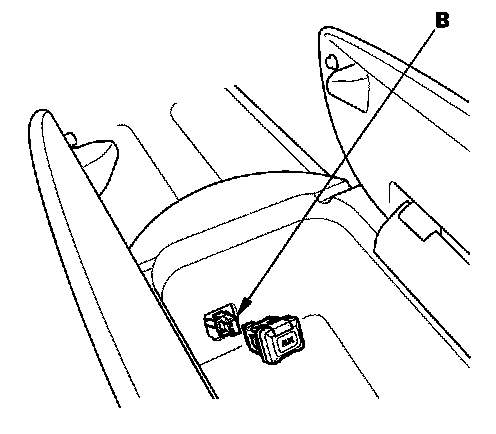

Operation CHARM
: Car repair manuals for everyone.
Home
>>
Acura
>>
2007
>>
MDX V6-3.7L
>>
Repair and Diagnosis
>>
Accessories and Optional Equipment
>>
Entertainment Systems
>>
Auxiliary Input / Output Jack
>>
Service and Repair
>>
Audio System
Audio System
Auxiliary Jack Assembly Replacement
Without Rear Entertainment
1.
Open the center console.

2.
Carefully pull out the auxiliary jack assembly (A), then disconnect the 5P connector (B).
3.
Install the reverse order of removal.